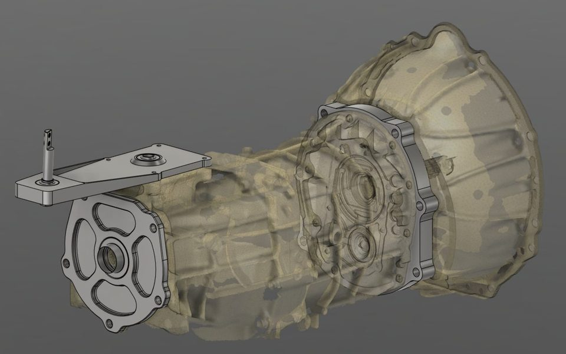

Mechanical Engineering · Japanese · CNC
I design parts and then make them.
Josie Higgins: mechanical engineering and Japanese student at the University of Rhode Island (May 2027), and a CNC programmer and designer at SK Grimes. I take parts from CAD and CAM through to finished hardware, and I want to do it in global manufacturing.
01Projects
Click a project for photos, video, and CAD you can rotate in the browser.

1UZ Project
Converting a 1993 Lexus SC400 (1UZ-FE V8) from automatic to an AR5 five-speed manual, plus an electric fan conversion and an ESP32 CAN-bus digital dash.

CNC Design & Production
Custom parts for camera repair and modification at SK Grimes, designed in SolidWorks, programmed in CAMWorks, and cut on a 3-axis mill and CO2 and fiber lasers.

Joshi's Jisho ジョシの辞書
A Japanese–English dictionary of engineering terms pulled from machining patents, with search and Anki export.
02Experience
-
Jul 2021 – present
Industrial Production Assistant, CNC Programmer & Designer · SK Grimes
Small shop doing specialized camera repair and modification. I run 3-axis CNC milling and CO2 and fiber laser cutting, build the CAD models and CAM programs for custom jobs, and design process improvements for efficiency and quality control.
-
Sep 2018 – Jul 2021
Engineering Technician · QA Specialist · Machine Operator · Teufelberger Fiber Rope Corp
Moved up from machine operator, running and maintaining production equipment, to quality assurance. In QA I tested safety and mountaineering rope to EN 892, EN 1891, EN 564 and NFPA standards and trained as an ISO 9001:2015 internal auditor. As an engineering technician I wrote and revised SOPs, supported SAP updates, and investigated production issues and recommended corrective actions.
-
Jun 2014 – Sep 2018
Auto Maintenance Mechanic · Hillsgrove Servicenter
Brakes, suspension, oil service, and engine work.
Education
-
Expected May 2027
B.S. Mechanical Engineering + B.A. Japanese Language & Culture · University of Rhode Island
International Engineering Program (Japanese). GPA 3.6 in both degrees.
-
May 2024
A.S. Engineering · Community College of Rhode Island
03Contact
Open to full-time mechanical design and manufacturing roles starting mid-2027, especially ones that use Japanese. Based in Rhode Island.